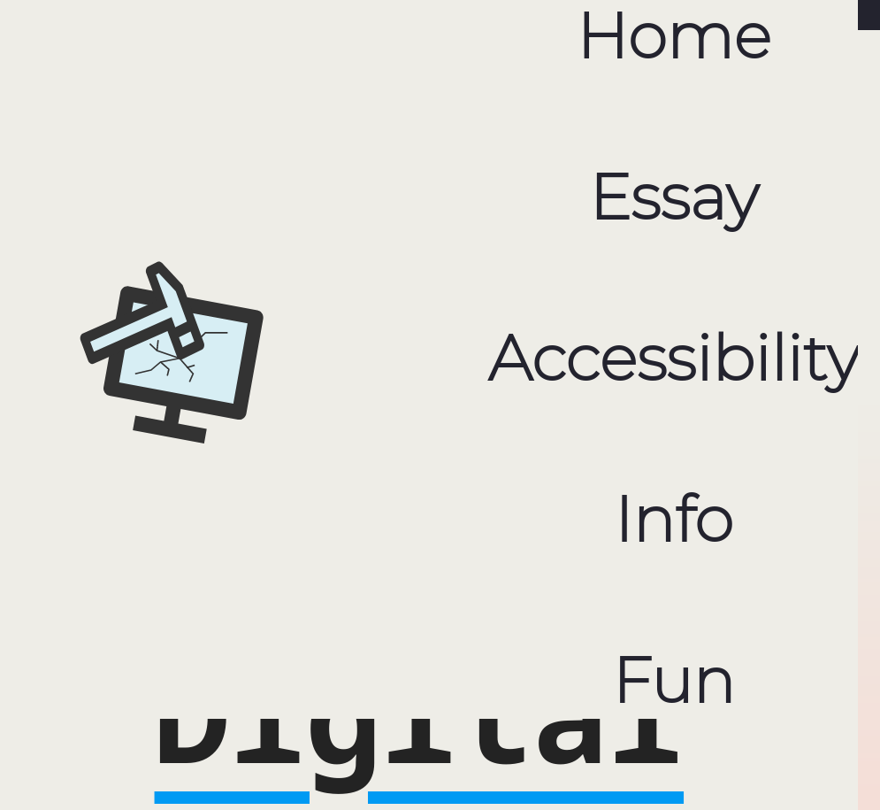

Accessibility
Inclusive design
We have been thinking about accessibility throughout the process of creating the websites. Starting with an simplistic approach to the design, letting the information on the site be the main focus, and avoiding unnecessary and distracting elements. Following conventions for how elements are placed, like putting the main menu in the top.
Different screens
By using relatived sized elements, the site is responsive and works well on different screen resolutions. When the width get below 700px, we use media queries to change the layout. Font sizes and margins is adjusted and the links in the main menu, is made bigger so it is easier to navigate with a finger, rather than a mouse pointer.
Colors
Setting up a color-palette with CSS variables has made it simpler to stick to our selected colors, and also quick to change colors for trying out different variants. We are making sure that the contrasts is good.
Coherent design
It's important that the whole page fits together, that the users always knows that they are on the same site. The menu bar always is on the top, colors are the same troughout all the pages. Margins and padding, is the the same on all pages.
Coding choices
Readability
Naming elements with descriptive names
Trying to making the html structure as simple as possible
Re-use code
The header element, has been used on every page. This page, the essay page and the info page all has a text article. The class "article-style" is used for all these pages, as the base-layout for these articles will be the same, even if they have some unique elements within the <article>-element
Sticky navigation bar
The site should be useable, even if the user needs to zoom. We wanted to have the navigation sticked to the top of the window, but as this broke the usability of page while zooming, we chosed not to.
Automated Testing
We have been using the automated test multiple times through the process, so we have not get to many errors each time.Achecker
Using Achecker
HTML Validator
Using html validator
CSS Validator
Using html validator